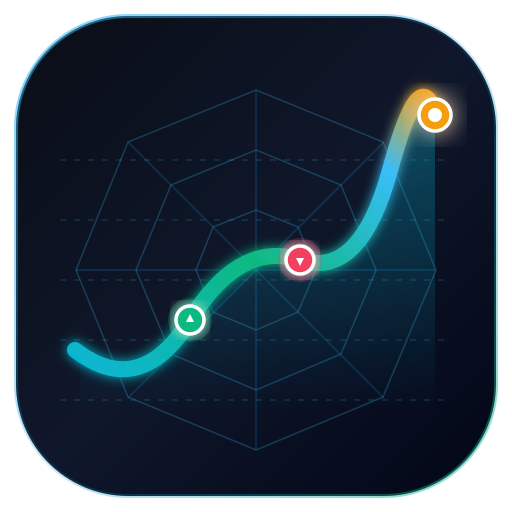

股價真實波幅與蛛網量化回測輸入股票或 ETF 代號（支援台股如 2330, 0050 及陸股 A 股如 600519, 510300），系統將透過 Cloudflare 全球邊緣網路極速載入。
| 跳動間距 (%) | 波動套利純獲利 ($) | 套利報酬率 (%) | 平倉套利筆數 | 平均每筆獲利 ($) | 資金斷糧臨界 (可買筆數 / 跌破價) | 抗跌30%需備現金 | 網格風報比 | 最大佔用本金 | 操作 |
|---|
| 日期 | 動作 | 成交價 | 數量 | 金額 | 平倉盈虧 | 說明 |
|---|---|---|---|---|---|---|
| 請先執行回測查看成交流水 | ||||||
| 標的 | 間距 / 報酬率 | 回撤 | 操作 |
|---|---|---|---|
| 暫無歷史存檔或載入中... | |||